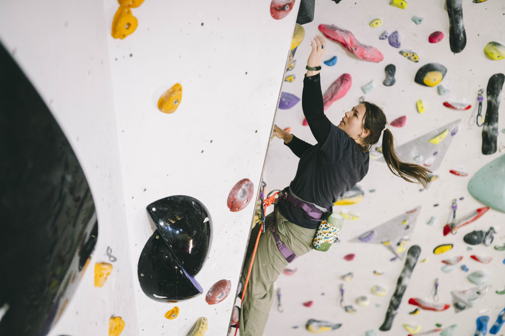

Almost every climber has stood below a route they could physically do, and not done it. Not because of strength or technique — because of the fall.
Fear of falling is one of the most common things climbers bring to a session, and one of the most misunderstood. It gets talked about as a character flaw — something you either have or don't. That framing isn't accurate, and it isn't useful. The fear of falling is a normal, learnable response, and it responds to the same principles that shape any other learned response: it can be retrained.
This article covers what fear actually is, how it tends to show up on the wall, why the instinct to avoid it backfires, and four tools we use with climbers to work with it directly.
1What Fear Actually Is
A protective system, not a personal failing
Fear is the body's threat-detection system doing exactly what it evolved to do. When your brain registers a risk of falling, it triggers a fast, physical response before conscious thought is even involved: heart rate rises, breathing shortens, muscles tense, and attention narrows onto the perceived danger.
On a real, unprotected fall, that response is exactly right. The problem is that this system is not very good at telling the difference between a genuine, unprotected fall and a clipped bolt, a good rope, and a competent belayer. The body reacts to perceived risk, not actual risk — so a well-protected lead fall or a padded bouldering mat can still trigger the same alarm as something genuinely dangerous.
Fear isn't a sign that something is wrong with you as a climber. It's a sign the alarm system is doing its job a little too enthusiastically.
Understanding this matters because it changes the goal. You're not trying to eliminate fear, or become someone who "doesn't feel it" — that isn't realistic and isn't even desirable in a sport with real consequences. The goal is to recalibrate the alarm, so it reflects the actual level of risk in front of you.
2How It Shows Up On The Wall
Rarely as panic — usually as small, quiet compromises
The fear of falling doesn't usually look dramatic. Most climbers don't freeze on the wall — they make a hundred small adjustments that quietly cap their climbing well below what they're capable of:
- Getting pumped far sooner than the move should require — over-gripping, holding the breath
- Down-climbing or taking, just before the crux, rather than committing to the move
- Quietly avoiding routes or styles that involve difficult moves
- Climbing feeling more like a task to survive than something enjoyable
None of these mean you're not brave enough. They're the visible edges of a threat-detection system firing earlier than the actual risk warrants — and, left alone, they tend to compound rather than fade with time on the wall.

3Why Avoidance Keeps Fear Alive
Avoiding a fall feels like relief. It's actually reinforcement.
When a climber backs off a move rather than risk a fall, the anxiety drops immediately. That drop feels like proof the avoidance was the right call — and it's exactly what trains the fear to stay in place.
Every time a fall is avoided, the brain never gets the chance to learn that the fall was survivable, and the outcome was fine. The threat belief goes unchallenged and unchanged. Short-term relief is traded for the fear staying exactly as strong the next time — often on a slightly easier route than the one before.
This is the single biggest reason "just climb more" doesn't reliably fix fear of falling. Time on the wall only retrains the response if it includes the thing being avoided — falling, on purpose, in a controlled way. Fear changes through experience, not around it.
4Four Tools That Actually Shift It
A practical, graded approach — not just "get on it and hope"
Notice how you're avoiding it
Most climbers don't realise they're scared — they just quietly stop taking the routes, moves, or falls that would trigger it. Before anything else changes, start noticing the small avoidances: the route you skip, the hold you down-climb to rather than let go from, the "not today" that comes up more than it should. Naming the avoidance is the first step to working with it.
Stay inside your window of tolerance
Graded exposure only works if it stays graded. Push into a fall that's far beyond what you can currently manage and you tip into panic — and panic doesn't teach the brain that falling is safe, it just confirms the alarm was right to go off. Practice falls that stretch you without overwhelming you, and only increase the height, run-out, or terrain once the current level feels manageable.
Stay with it until the fear comes back down
Taking one fall and climbing straight down isn't enough — the last thing the body registers is still the spike of fear. Stay in the practice, take the fall again, and wait it out until the fear has genuinely settled before you finish. That's what leaves you with a lasting memory of the fall being fine, rather than a lasting memory of being afraid.
Vary the practice
Fear that's only been tested one way tends to only improve one way. Mix up how you fall — going for a hold rather than from a static position, falling to the side, on top rope and on lead, on different walls and angles — so the confidence you build actually transfers to the climbing you want to do, not just the drill you practised.